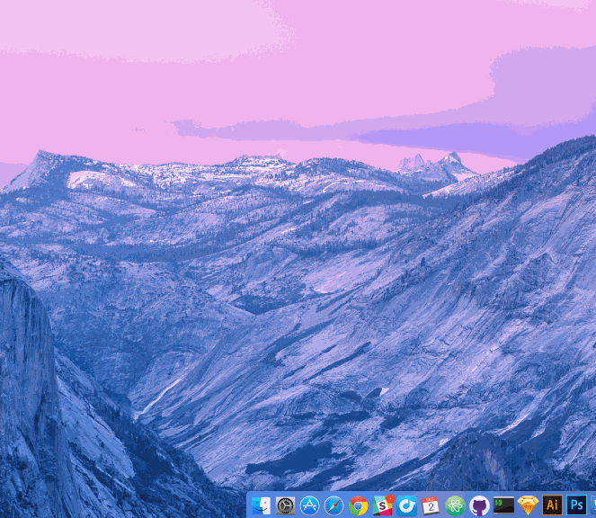
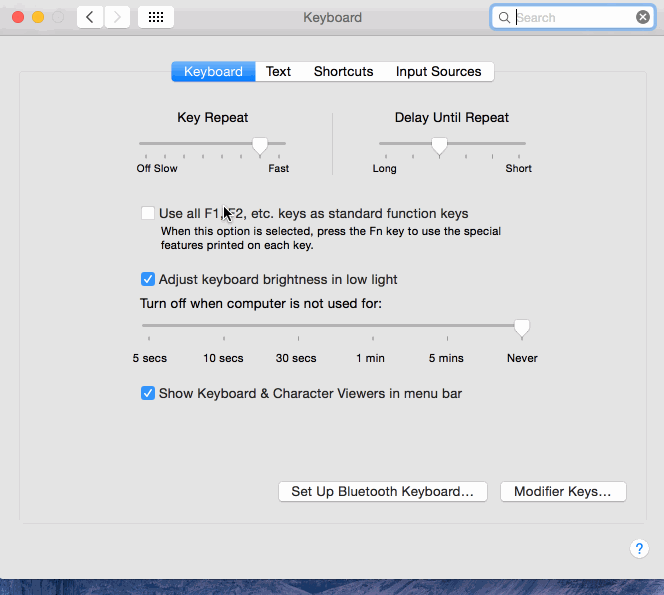
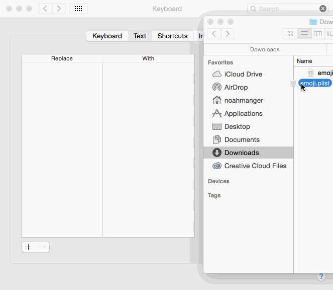
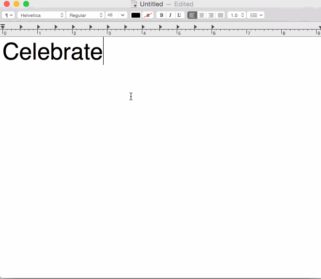

Ever wanted to be able to use Slack or GitHub-style emoji notation (:emoji:) in other apps on your Mac, like Twitter, Messages or Safari?
These are the emoji system shortcuts you deserve.
How To Get It Done
Note: I'm pretty sure this only works in Yosemite.
1. Download this file:
2. Open up System Preferences
3. Click "Text"
4. Drag "emoji.plist" right here:
5. Have an emoji party!
Heads up!
-
Emojis not showing up?
Not all apps support text substitutions automatically. So if you're emojis aren't popping into existence, you might need to go make sure "Edit" > "Substitutions" > "Text Replacement" is enabled. If this menu item isn't there, you're out of luck.
-
iOS & OSX
iOS and OSX now share text shortcuts! So you can actually type :thumbsup: on your iPhone or iPad and have the emoji show up. However! Sometimes when type a single letter or number it wants to replace it with the emoji.
-
Questions? Issues? Ideas?
Hit me up on Twitter or file an issue at the repo.
Those sweet, sweet emojis
- 👠:+1:
- 👠:-1:
- 💯 :100:
- 🔢 :1234:
- 🱠:8ball:
- 🅰 :a:
- 🆠:ab:
- 🔤 :abc:
- 🔡 :abcd:
- 🉑 :accept:
- 🚡 :aerial_tramway:
- ✈ :airplane:
- â° :alarm_clock:
- 👽 :alien:
- 🚑 :ambulance:
- ⚓ :anchor:
- 👼 :angel:
- 💢 :anger:
- 😠:angry:
- 😧 :anguished:
- 🜠:ant:
- ğŸ :apple:
- ♒ :aquarius:
- ♈ :aries:
- ◀ :arrow_backward:
- ⬠:arrow_double_down:
- ⏫ :arrow_double_up:
- ⬇ :arrow_down:
- 🔽 :arrow_down_small:
- ▶ :arrow_forward:
- ⤵ :arrow_heading_down:
- ⤴ :arrow_heading_up:
- ⬅ :arrow_left:
- ↙ :arrow_lower_left:
- ↘ :arrow_lower_right:
- ➡ :arrow_right:
- ↪ :arrow_right_hook:
- ⬆ :arrow_up:
- ↕ :arrow_up_down:
- 🔼 :arrow_up_small:
- ↖ :arrow_upper_left:
- ↗ :arrow_upper_right:
- 🔃 :arrows_clockwise:
- 🔄 :arrows_counterclockwise:
- 🨠:art:
- 🚛 :articulated_lorry:
- 😲 :astonished:
- 👟 :athletic_shoe:
- 🧠:atm:
- 🅱 :b:
- 👶 :baby:
- 🼠:baby_bottle:
- 🤠:baby_chick:
- 🚼 :baby_symbol:
- 🔙 :back:
- 🛄 :baggage_claim:
- 🈠:balloon:
- ☑ :ballot_box_with_check:
- ğŸ :bamboo:
- 🌠:banana:
- ‼ :bangbang:
- 🦠:bank:
- 📊 :bar_chart:
- 💈 :barber:
- ⚾ :baseball:
- 🀠:basketball:
- 🛀 :bath:
- 🛠:bathtub:
- 🔋 :battery:
- 🻠:bear:
- ğŸ :bee:
- 🺠:beer:
- 🻠:beers:
- ğŸ :beetle:
- 🔰 :beginner:
- 🔔 :bell:
- 🱠:bento:
- 🚴 :bicyclist:
- 🚲 :bike:
- 👙 :bikini:
- 🦠:bird:
- 🂠:birthday:
- ⚫ :black_circle:
- 🃠:black_joker:
- ⬛ :black_large_square:
- ◾ :black_medium_small_square:
- ◼ :black_medium_square:
- ✒ :black_nib:
- ▪ :black_small_square:
- 🔲 :black_square_button:
- 🌼 :blossom:
- 🡠:blowfish:
- 📘 :blue_book:
- 🚙 :blue_car:
- 💙 :blue_heart:
- 😊 :blush:
- 🗠:boar:
- ⛵ :boat:
- 💣 :bomb:
- 📖 :book:
- 🔖 :bookmark:
- 📑 :bookmark_tabs:
- 📚 :books:
- 💥 :boom:
- 👢 :boot:
- 💠:bouquet:
- 🙇 :bow:
- 🳠:bowling:
- 👦 :boy:
- ğŸ :bread:
- 👰 :bride_with_veil:
- 🌉 :bridge_at_night:
- 💼 :briefcase:
- 💔 :broken_heart:
- 🛠:bug:
- 💡 :bulb:
- 🚅 :bullettrain_front:
- 🚄 :bullettrain_side:
- 🚌 :bus:
- 🚠:busstop:
- 👤 :bust_in_silhouette:
- 👥 :busts_in_silhouette:
- 🌵 :cactus:
- 🰠:cake:
- 📆 :calendar:
- 📲 :calling:
- 🫠:camel:
- 📷 :camera:
- ♋ :cancer:
- 🬠:candy:
- 🔠:capital_abcd:
- ♑ :capricorn:
- 🚗 :car:
- 📇 :card_index:
- ğŸ :carousel_horse:
- 🱠:cat:
- 🈠:cat2:
- 💿 :cd:
- 💹 :chart:
- 📉 :chart_with_downwards_trend:
- 📈 :chart_with_upwards_trend:
- ğŸ :checkered_flag:
- 💠:cherries:
- 🌸 :cherry_blossom:
- 🌰 :chestnut:
- 🔠:chicken:
- 🚸 :children_crossing:
- 🫠:chocolate_bar:
- 🄠:christmas_tree:
- ⛪ :church:
- 🦠:cinema:
- 🪠:circus_tent:
- 🌇 :city_sunrise:
- 🌆 :city_sunset:
- 🆑 :cl:
- 👠:clap:
- 🬠:clapper:
- 📋 :clipboard:
- 🕠:clock1:
- 🕙 :clock10:
- 🕥 :clock1030:
- 🕚 :clock11:
- 🕦 :clock1130:
- 🕛 :clock12:
- 🕧 :clock1230:
- 🕜 :clock130:
- 🕑 :clock2:
- 🕠:clock230:
- 🕒 :clock3:
- 🕠:clock330:
- 🕓 :clock4:
- 🕟 :clock430:
- 🕔 :clock5:
- 🕠:clock530:
- 🕕 :clock6:
- 🕡 :clock630:
- 🕖 :clock7:
- 🕢 :clock730:
- 🕗 :clock8:
- 🕣 :clock830:
- 🕘 :clock9:
- 🕤 :clock930:
- 📕 :closed_book:
- 🔠:closed_lock_with_key:
- 🌂 :closed_umbrella:
- ☠:cloud:
- ♣ :clubs:
- 🸠:cocktail:
- ☕ :coffee:
- 😰 :cold_sweat:
- 💥 :collision:
- 💻 :computer:
- 🊠:confetti_ball:
- 😖 :confounded:
- 😕 :confused:
- ㊗ :congratulations:
- 🚧 :construction:
- 👷 :construction_worker:
- 🪠:convenience_store:
- 🪠:cookie:
- 🆒 :cool:
- 👮 :cop:
- © :copyright:
- 🌽 :corn:
- 👫 :couple:
- 💑 :couple_with_heart:
- 💠:couplekiss:
- 🮠:cow:
- 🄠:cow2:
- 💳 :credit_card:
- 🌙 :crescent_moon:
- 🊠:crocodile:
- 🌠:crossed_flags:
- 👑 :crown:
- 😢 :cry:
- 😿 :crying_cat_face:
- 🔮 :crystal_ball:
- 💘 :cupid:
- â° :curly_loop:
- 💱 :currency_exchange:
- 🛠:curry:
- 🮠:custard:
- 🛃 :customs:
- 🌀 :cyclone:
- 💃 :dancer:
- 👯 :dancers:
- 🡠:dango:
- 🯠:dart:
- 💨 :dash:
- 📅 :date:
- 🌳 :deciduous_tree:
- 🬠:department_store:
- 💠:diamond_shape_with_a_dot_inside:
- ♦ :diamonds:
- 😠:disappointed:
- 😥 :disappointed_relieved:
- 💫 :dizzy:
- 😵 :dizzy_face:
- 🚯 :do_not_litter:
- 🶠:dog:
- 🕠:dog2:
- 💵 :dollar:
- ğŸ :dolls:
- 🬠:dolphin:
- 🚪 :door:
- 🩠:doughnut:
- 🉠:dragon:
- 🲠:dragon_face:
- 👗 :dress:
- 🪠:dromedary_camel:
- 💧 :droplet:
- 📀 :dvd:
- 📧 :e-mail:
- 👂 :ear:
- 🌾 :ear_of_rice:
- 🌠:earth_africa:
- 🌠:earth_americas:
- 🌠:earth_asia:
- 🳠:egg:
- 🆠:eggplant:
- 8 :eight:
- ✴ :eight_pointed_black_star:
- ✳ :eight_spoked_asterisk:
- 🔌 :electric_plug:
- 😠:elephant:
- ✉ :email:
- 🔚 :end:
- ✉ :envelope:
- 📩 :envelope_with_arrow:
- 💶 :euro:
- 🰠:european_castle:
- 🤠:european_post_office:
- 🌲 :evergreen_tree:
- â— :exclamation:
- 😑 :expressionless:
- 👓 :eyeglasses:
- 👀 :eyes:
- 👊 :facepunch:
- ğŸ :factory:
- 🂠:fallen_leaf:
- 👪 :family:
- ⏩ :fast_forward:
- 📠:fax:
- 😨 :fearful:
- 🾠:feet:
- 🡠:ferris_wheel:
- 📠:file_folder:
- 🔥 :fire:
- 🚒 :fire_engine:
- 🆠:fireworks:
- 🌓 :first_quarter_moon:
- 🌛 :first_quarter_moon_with_face:
- 🟠:fish:
- 🥠:fish_cake:
- 🣠:fishing_pole_and_fish:
- ✊ :fist:
- 5 :five:
- ğŸ :flags:
- 🔦 :flashlight:
- 💾 :floppy_disk:
- 🴠:flower_playing_cards:
- 😳 :flushed:
- 🌠:foggy:
- 🈠:football:
- 👣 :footprints:
- 🴠:fork_and_knife:
- ⛲ :fountain:
- 4 :four:
- 🀠:four_leaf_clover:
- 🆓 :free:
- 🤠:fried_shrimp:
- 🟠:fries:
- 🸠:frog:
- 😦 :frowning:
- ⛽ :fuelpump:
- 🌕 :full_moon:
- 🌠:full_moon_with_face:
- 🲠:game_die:
- 💠:gem:
- ♊ :gemini:
- 👻 :ghost:
- ğŸ :gift:
- 💠:gift_heart:
- 👧 :girl:
- 🌠:globe_with_meridians:
- ğŸ :goat:
- ⛳ :golf:
- 🇠:grapes:
- ğŸ :green_apple:
- 📗 :green_book:
- 💚 :green_heart:
- â• :grey_exclamation:
- ❔ :grey_question:
- 😬 :grimacing:
- 😠:grin:
- 😀 :grinning:
- 💂 :guardsman:
- 🸠:guitar:
- 🔫 :gun:
- 💇 :haircut:
- 🔠:hamburger:
- 🔨 :hammer:
- 🹠:hamster:
- ✋ :hand:
- 👜 :handbag:
- 💩 :hankey:
- # :hash:
- 🥠:hatched_chick:
- 🣠:hatching_chick:
- 🧠:headphones:
- 🙉 :hear_no_evil:
- ⤠:heart:
- 💟 :heart_decoration:
- 😠:heart_eyes:
- 😻 :heart_eyes_cat:
- 💓 :heartbeat:
- 💗 :heartpulse:
- ♥ :hearts:
- ✔ :heavy_check_mark:
- â— :heavy_division_sign:
- 💲 :heavy_dollar_sign:
- â— :heavy_exclamation_mark:
- ➖ :heavy_minus_sign:
- ✖ :heavy_multiplication_x:
- â• :heavy_plus_sign:
- 🚠:helicopter:
- 🌿 :herb:
- 🌺 :hibiscus:
- 🔆 :high_brightness:
- 👠:high_heel:
- 🔪 :hocho:
- 🯠:honey_pot:
- ğŸ :honeybee:
- 🴠:horse:
- 🇠:horse_racing:
- 🥠:hospital:
- 🨠:hotel:
- ♨ :hotsprings:
- ⌛ :hourglass:
- ⏳ :hourglass_flowing_sand:
- ğŸ :house:
- 🡠:house_with_garden:
- 😯 :hushed:
- 🨠:ice_cream:
- 🦠:icecream:
- 🆔 :id:
- 🉠:ideograph_advantage:
- 👿 :imp:
- 📥 :inbox_tray:
- 📨 :incoming_envelope:
- 💠:information_desk_person:
- ℹ :information_source:
- 😇 :innocent:
- ≠:interrobang:
- 📱 :iphone:
- 🮠:izakaya_lantern:
- 🃠:jack_o_lantern:
- 🗾 :japan:
- 🯠:japanese_castle:
- 👺 :japanese_goblin:
- 👹 :japanese_ogre:
- 👖 :jeans:
- 😂 :joy:
- 😹 :joy_cat:
- 🔑 :key:
- 🔟 :keycap_ten:
- 👘 :kimono:
- 💋 :kiss:
- 😗 :kissing:
- 😽 :kissing_cat:
- 😚 :kissing_closed_eyes:
- 😘 :kissing_heart:
- 😙 :kissing_smiling_eyes:
- 🨠:koala:
- 🈠:koko:
- 🮠:lantern:
- 🔵 :large_blue_circle:
- 🔷 :large_blue_diamond:
- 🔶 :large_orange_diamond:
- 🌗 :last_quarter_moon:
- 🌜 :last_quarter_moon_with_face:
- 😆 :laughing:
- 🃠:leaves:
- 📒 :ledger:
- 🛅 :left_luggage:
- ↔ :left_right_arrow:
- ↩ :leftwards_arrow_with_hook:
- 🋠:lemon:
- ♌ :leo:
- 🆠:leopard:
- â™ :libra:
- 🚈 :light_rail:
- 🔗 :link:
- 👄 :lips:
- 💄 :lipstick:
- 🔒 :lock:
- 🔠:lock_with_ink_pen:
- ğŸ :lollipop:
- ➿ :loop:
- 📢 :loudspeaker:
- 🩠:love_hotel:
- 💌 :love_letter:
- 🔅 :low_brightness:
- Ⓜ :m:
- 🔠:mag:
- 🔠:mag_right:
- 🀄 :mahjong:
- 📫 :mailbox:
- 📪 :mailbox_closed:
- 📬 :mailbox_with_mail:
- 📠:mailbox_with_no_mail:
- 👨 :man:
- 👲 :man_with_gua_pi_mao:
- 👳 :man_with_turban:
- 👠:mans_shoe:
- ğŸ :maple_leaf:
- 😷 :mask:
- 💆 :massage:
- 🖠:meat_on_bone:
- 📣 :mega:
- 🈠:melon:
- 📠:memo:
- 🚹 :mens:
- 🚇 :metro:
- 🤠:microphone:
- 🔬 :microscope:
- 🌌 :milky_way:
- 🚠:minibus:
- 💽 :minidisc:
- 📴 :mobile_phone_off:
- 💸 :money_with_wings:
- 💰 :moneybag:
- 💠:monkey:
- 🵠:monkey_face:
- 🚠:monorail:
- 🌔 :moon:
- 📠:mortar_board:
- 🗻 :mount_fuji:
- 🚵 :mountain_bicyclist:
- 🚠:mountain_cableway:
- 🚠:mountain_railway:
- ğŸ :mouse:
- ğŸ :mouse2:
- 🥠:movie_camera:
- 🗿 :moyai:
- 💪 :muscle:
- 🄠:mushroom:
- 🹠:musical_keyboard:
- 🵠:musical_note:
- 🼠:musical_score:
- 🔇 :mute:
- 💅 :nail_care:
- 📛 :name_badge:
- 👔 :necktie:
- ❎ :negative_squared_cross_mark:
- 😠:neutral_face:
- 🆕 :new:
- 🌑 :new_moon:
- 🌚 :new_moon_with_face:
- 📰 :newspaper:
- 🆖 :ng:
- 9 :nine:
- 🔕 :no_bell:
- 🚳 :no_bicycles:
- ⛔ :no_entry:
- 🚫 :no_entry_sign:
- 🙅 :no_good:
- 📵 :no_mobile_phones:
- 😶 :no_mouth:
- 🚷 :no_pedestrians:
- 🚠:no_smoking:
- 🚱 :non-potable_water:
- 👃 :nose:
- 📓 :notebook:
- 📔 :notebook_with_decorative_cover:
- 🶠:notes:
- 🔩 :nut_and_bolt:
- â• :o:
- 🅾 :o2:
- 🌊 :ocean:
- 🙠:octopus:
- 🢠:oden:
- 🢠:office:
- 🆗 :ok:
- 👌 :ok_hand:
- 🙆 :ok_woman:
- 👴 :older_man:
- 👵 :older_woman:
- 🔛 :on:
- 🚘 :oncoming_automobile:
- 🚠:oncoming_bus:
- 🚔 :oncoming_police_car:
- 🚖 :oncoming_taxi:
- 1 :one:
- 📖 :open_book:
- 📂 :open_file_folder:
- 👠:open_hands:
- 😮 :open_mouth:
- ⛎ :ophiuchus:
- 📙 :orange_book:
- 📤 :outbox_tray:
- 🂠:ox:
- 📦 :package:
- 📄 :page_facing_up:
- 📃 :page_with_curl:
- 📟 :pager:
- 🌴 :palm_tree:
- 🼠:panda_face:
- 📠:paperclip:
- 🅿 :parking:
- 〽 :part_alternation_mark:
- ⛅ :partly_sunny:
- 🛂 :passport_control:
- 🾠:paw_prints:
- 👠:peach:
- ğŸ :pear:
- 📠:pencil:
- ✠:pencil2:
- 🧠:penguin:
- 😔 :pensive:
- ğŸ :performing_arts:
- 😣 :persevere:
- 🙠:person_frowning:
- 👱 :person_with_blond_hair:
- 🙠:person_with_pouting_face:
- ☠:phone:
- 🷠:pig:
- 🖠:pig2:
- 🽠:pig_nose:
- 💊 :pill:
- ğŸ :pineapple:
- ♓ :pisces:
- 🕠:pizza:
- 👇 :point_down:
- 👈 :point_left:
- 👉 :point_right:
- ☠:point_up:
- 👆 :point_up_2:
- 🚓 :police_car:
- 🩠:poodle:
- 💩 :poop:
- 🣠:post_office:
- 📯 :postal_horn:
- 📮 :postbox:
- 🚰 :potable_water:
- 👠:pouch:
- 🗠:poultry_leg:
- 💷 :pound:
- 😾 :pouting_cat:
- 🙠:pray:
- 👸 :princess:
- 👊 :punch:
- 💜 :purple_heart:
- 👛 :purse:
- 📌 :pushpin:
- 🚮 :put_litter_in_its_place:
- ❓ :question:
- 🰠:rabbit:
- 🇠:rabbit2:
- ğŸ :racehorse:
- 📻 :radio:
- 🔘 :radio_button:
- 😡 :rage:
- 🚃 :railway_car:
- 🌈 :rainbow:
- ✋ :raised_hand:
- 🙌 :raised_hands:
- 🙋 :raising_hand:
- ğŸ :ram:
- 🜠:ramen:
- 🀠:rat:
- ♻ :recycle:
- 🚗 :red_car:
- 🔴 :red_circle:
- ® :registered:
- ☺ :relaxed:
- 😌 :relieved:
- 🔠:repeat:
- 🔂 :repeat_one:
- 🚻 :restroom:
- 💠:revolving_hearts:
- ⪠:rewind:
- 🀠:ribbon:
- 🚠:rice:
- 🙠:rice_ball:
- 😠:rice_cracker:
- 👠:rice_scene:
- 💠:ring:
- 🚀 :rocket:
- 🢠:roller_coaster:
- 📠:rooster:
- 🌹 :rose:
- 🚨 :rotating_light:
- 📠:round_pushpin:
- 🚣 :rowboat:
- 🉠:rugby_football:
- 🃠:runner:
- 🃠:running:
- 🽠:running_shirt_with_sash:
- 🈂 :sa:
- â™ :sagittarius:
- ⛵ :sailboat:
- 🶠:sake:
- 👡 :sandal:
- 🅠:santa:
- 📡 :satellite:
- 😆 :satisfied:
- 🷠:saxophone:
- 🫠:school:
- 💠:school_satchel:
- ✂ :scissors:
- â™ :scorpius:
- 😱 :scream:
- 🙀 :scream_cat:
- 📜 :scroll:
- 💺 :seat:
- ㊙ :secret:
- 🙈 :see_no_evil:
- 🌱 :seedling:
- 7 :seven:
- 🧠:shaved_ice:
- 👠:sheep:
- 🚠:shell:
- 🚢 :ship:
- 👕 :shirt:
- 💩 :shit:
- 👠:shoe:
- 🚿 :shower:
- 📶 :signal_strength:
- 6 :six:
- 🔯 :six_pointed_star:
- 🿠:ski:
- 💀 :skull:
- 😴 :sleeping:
- 😪 :sleepy:
- 🰠:slot_machine:
- 🔹 :small_blue_diamond:
- 🔸 :small_orange_diamond:
- 🔺 :small_red_triangle:
- 🔻 :small_red_triangle_down:
- 😄 :smile:
- 😸 :smile_cat:
- 😃 :smiley:
- 😺 :smiley_cat:
- 😈 :smiling_imp:
- 😠:smirk:
- 😼 :smirk_cat:
- 🚬 :smoking:
- 🌠:snail:
- ğŸ :snake:
- 🂠:snowboarder:
- ❄ :snowflake:
- ⛄ :snowman:
- 😠:sob:
- ⚽ :soccer:
- 🔜 :soon:
- 🆘 :sos:
- 🔉 :sound:
- 👾 :space_invader:
- â™ :spades:
- ğŸ :spaghetti:
- ⇠:sparkle:
- 🇠:sparkler:
- ✨ :sparkles:
- 💖 :sparkling_heart:
- 🙊 :speak_no_evil:
- 🔊 :speaker:
- 💬 :speech_balloon:
- 🚤 :speedboat:
- ❎ :star:
- 🌟 :star2:
- 🌃 :stars:
- 🚉 :station:
- 🗽 :statue_of_liberty:
- 🚂 :steam_locomotive:
- 🲠:stew:
- 📠:straight_ruler:
- 📠:strawberry:
- 😛 :stuck_out_tongue:
- 😠:stuck_out_tongue_closed_eyes:
- 😜 :stuck_out_tongue_winking_eye:
- 🌠:sun_with_face:
- 🌻 :sunflower:
- 😠:sunglasses:
- ☀ :sunny:
- 🌅 :sunrise:
- 🌄 :sunrise_over_mountains:
- 🄠:surfer:
- 🣠:sushi:
- 🚟 :suspension_railway:
- 😓 :sweat:
- 💦 :sweat_drops:
- 😅 :sweat_smile:
- ğŸ :sweet_potato:
- 🊠:swimmer:
- 🔣 :symbols:
- 💉 :syringe:
- 🉠:tada:
- 🋠:tanabata_tree:
- 🊠:tangerine:
- ♉ :taurus:
- 🚕 :taxi:
- 🵠:tea:
- ☠:telephone:
- 📠:telephone_receiver:
- 🔠:telescope:
- 🾠:tennis:
- ⛺ :tent:
- 💠:thought_balloon:
- 3 :three:
- 👠:thumbsdown:
- 👠:thumbsup:
- 🫠:ticket:
- 🯠:tiger:
- 🅠:tiger2:
- 😫 :tired_face:
- ™ :tm:
- 🚽 :toilet:
- 🗼 :tokyo_tower:
- 🅠:tomato:
- 👅 :tongue:
- 🔠:top:
- 🩠:tophat:
- 🚜 :tractor:
- 🚥 :traffic_light:
- 🚃 :train:
- 🚆 :train2:
- 🚊 :tram:
- 🚩 :triangular_flag_on_post:
- 📠:triangular_ruler:
- 🔱 :trident:
- 😤 :triumph:
- 🚠:trolleybus:
- 🆠:trophy:
- 🹠:tropical_drink:
- ğŸ :tropical_fish:
- 🚚 :truck:
- 🺠:trumpet:
- 👕 :tshirt:
- 🌷 :tulip:
- 🢠:turtle:
- 📺 :tv:
- 🔀 :twisted_rightwards_arrows:
- 2 :two:
- 💕 :two_hearts:
- 👬 :two_men_holding_hands:
- 👠:two_women_holding_hands:
- 🈹 :u5272:
- 🈴 :u5408:
- 🈺 :u55b6:
- 🈯 :u6307:
- 🈷 :u6708:
- 🈶 :u6709:
- 🈵 :u6e80:
- 🈚 :u7121:
- 🈸 :u7533:
- 🈲 :u7981:
- 🈳 :u7a7a:
- ☔ :umbrella:
- 😒 :unamused:
- 🔠:underage:
- 🔓 :unlock:
- 🆙 :up:
- ✌ :v:
- 🚦 :vertical_traffic_light:
- 📼 :vhs:
- 📳 :vibration_mode:
- 📹 :video_camera:
- 🮠:video_game:
- 🻠:violin:
- â™ :virgo:
- 🌋 :volcano:
- 🆚 :vs:
- 🚶 :walking:
- 🌘 :waning_crescent_moon:
- 🌖 :waning_gibbous_moon:
- ⚠ :warning:
- ⌚ :watch:
- 🃠:water_buffalo:
- 🉠:watermelon:
- 👋 :wave:
- 〰 :wavy_dash:
- 🌒 :waxing_crescent_moon:
- 🌔 :waxing_gibbous_moon:
- 🚾 :wc:
- 😩 :weary:
- 💒 :wedding:
- 🳠:whale:
- 🋠:whale2:
- ♿ :wheelchair:
- ✅ :white_check_mark:
- ⚪ :white_circle:
- 💮 :white_flower:
- ⬜ :white_large_square:
- ◽ :white_medium_small_square:
- ◻ :white_medium_square:
- ▫ :white_small_square:
- 🔳 :white_square_button:
- ğŸ :wind_chime:
- 🷠:wine_glass:
- 😉 :wink:
- 🺠:wolf:
- 👩 :woman:
- 👚 :womans_clothes:
- 👒 :womans_hat:
- 🚺 :womens:
- 😟 :worried:
- 🔧 :wrench:
- ⌠:x:
- 💛 :yellow_heart:
- 💴 :yen:
- 😋 :yum:
- ⚡ :zap:
- 0 :zero:
- 💤 :zzz: